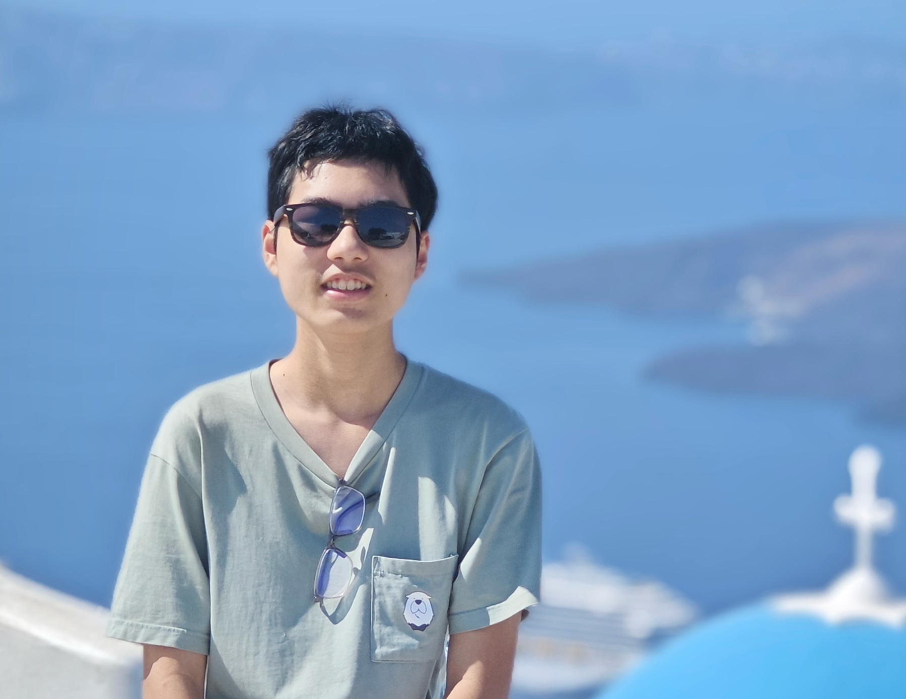
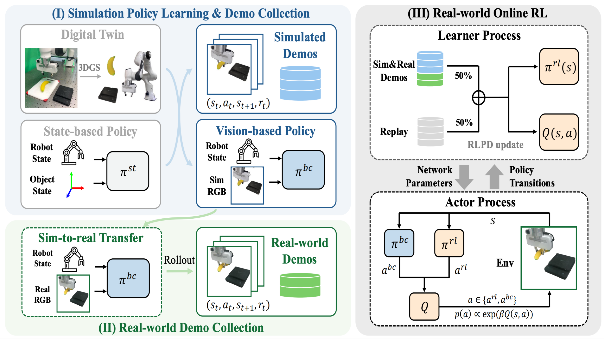

|
Yizhuo Wu I am a Ph.D. student at the University of Illinois Urbana-Champaign (UIUC), advised by Prof. Huan Zhang. I received my B.S. in Computer Science from Peking University in 2026, where I was advised by Prof. Hao Dong as part of the PKU-Agibot Lab. My research focuses on developing foundation models for generalizable, robust, and dexterous robotic manipulation in complex real-world environments, combining large-scale pre-training, computer vision, and reinforcement learning. Email / Google Scholar / Github / WeChat |
 |
{kind=link}
{kind=link}
News
|
Publications* Equal Contribution |
|
 |
SimLauncher: Launching Sample-Efficient Real-world Robotic Reinforcement Learning via Simulation Pre-training
Mingdong Wu*, Lehong Wu*, Yizhuo Wu*, Weiyao Huang, Hongwei Fan, Zheyuan Hu, Haoran Geng, Jinzhou Li, Jiahe Ying, Long Yang, Yuanpei Chen, Hao Dong IROS 2025, Oral Presentation [Paper] [Video][Project] We combine the strengths of real-world RL and real-to-sim-to-real approaches to accelerate policy learning. |
Experience |
|
University of Illinois Urbana-Champaign (UIUC)
2026.08 - Present Ph.D. Student Advisor: Prof. Huan Zhang |
|
|
|
University of California, Berkeley (UCB)
2025.07 - 2025.12 Visiting Student at BAIR Advisor: Haoran Geng, Prof. Jitendra Malik |
|
Peking University (PKU)
2022.09 - 2026.07 B.S. in Computer Science Research Advisor: Prof. Hao Dong |
|
Template, Last updated: Aug 2026 © 2026 Yizhuo Wu |